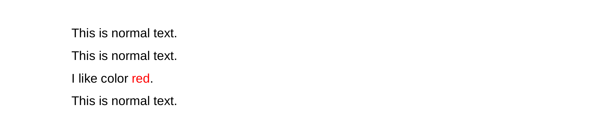

Styles
Here you can find information about the appearance of your document. You will learn how to use the default stylesheet and how to create and use your own.
The only special thing about using rt2pdf here is the syntax of the stylesheet.
You can make rst2pdf print the default stylesheet:
rst2pdf --print-stylesheet| Attribute | Default value | Description |
|---|---|---|
fontName |
Helvetica | Font type |
fontSize |
10 | Font size |
leading |
12 | Space between adjacent lines of type |
leftIndent |
0 | Indent on the left |
rightIndent |
0 | Indent on the right |
firstLineIndent |
0 | Indent of the first line of an item |
alignment |
left | Placing an item on the page |
spaceBefore |
0 | Space before item |
spaceAfter |
0 | Space after item |
bulletFontName |
Helvetica | Bullet font type |
bulletFontSize |
10 | Bullet font size |
bulletText |
\u2022 | Bullet point type |
bulletIndent |
0 | Indent of bullet points |
textColor |
black | Color of the text |
backColor |
None | Color of the background |
wordWrap |
None | Breaking a section of text into lines |
borderWidth |
0 | Setting the width of an element's four borders |
borderPadding |
0 | Generate space around an item's content, inside of any defined borders |
borderColor |
None | Setting the color of an item 's four borders |
borderRadius |
None | Defining the radius of the item's corners |
-s
option:rst2pdf mydoc.txt -s mystyles.txt- what you specify using
--stylesheet_path - the option
stylesheet_pathin the config file - the current folder
~/.rst2pdf/styles- the styles folder within rst2pdf’s installation folder
Using class directive
Learn how to style individual paragraphs.
- Open any text editor.
-
Define the styles according to the JSON
syntax. Take a look at the following example:
"styles": { "large-font": { "fontSize": 25 }, "very-large-font": { "fontSize": 40 } }
- Save as a .json file, for example style.json.
- Then create another document in Text Editor.
-
Use a class directive, as in the following example:
..class:: large-font This is the text in font 25. ..class:: very-large-font This is the text in font 40. - Save as an .rst file.
-
Use rst2pdf to generate a PDF.
Note: Remember to attach the stylesheet you created.You should get a result like the one in the image below:
Interpreted text roles
Learn what interpreted text roles are and how to use them
Interpreted text roles are an extension mechanism for inline markup in reStructuredText.
Standard roles are described in reStructuredText Interpreted Text Roles. See the Interpreted Text section in the reStructuredText Markup Specification for syntax details. Interpreted text roles are defined in stylesheet in the same way as classes. They are generally similar to classes. The main difference between them is that classes style an entire single paragraph after you call a directive, while roles style only the portion of text selected in the appropriate way.
Using interpreted text roles
Learn what to do to use interpreted text roles in your document.
- Open Text Editor.
-
Define the styles according to the JSON
syntax. Take a look at the following example:
"styles": { "redtext": { "textColor": red }, }
- Save as a .json file, for example style.json.
- Then create another document in a text editor.
-
Use an interpreted text role, as in the following example:
This is normal text. .. role:: redtext This is normal text. I like color :redtext:`red`. This is normal text. - Save as an .rst file.
-
Use rst2pdf to generate a PDF.
Note: Remember to attach the stylesheet you created.You should get a result like the one in the image below:
Available attributes
Here you have listed the only attributes that work on styles when used for interpreted roles (inline styles).
fontNamefontSizetextColorbackColor
For more information about this, please check the rST docs
Included stylesheets
To make some of the more common adjustments easier, rst2pdf includes a collection of stylesheets you can use.
Font styles
serifuse the PDF serif font (Times) instead of the default Sans Serif (Arial)freetype-sansuses your system’s default TrueType Sans Serif fontfreetype-serifuses your system’s default TrueType Serif fonttwelvepointmakes the base font 12pt (default is 10pt)tenpointmakes the base font 10pteightpointmakes the base font 8ptkerningswitches to document to DejaVU Sans font and enables kerning
Page layout styles
twocolumnuses the twoColumn layout as the initial page layoutdouble-sidedadds a gutter margin (margin at the “in side” of the pages)
Page size styles
These stylesheets change the paper size.
The usual standard paper sizes are supported: A0,
A1, A2, A3,
A4 (default), A5, A6,
B0, B1, B2,
B3, B4, B5,
B6, Letter, Legal,
11x17.
The name of the stylesheet is lowercase.
Code block styles
abapalgol_nualgolarduinoautumnborlandbwcolorfuldefaultemacsfriendlyfruityigorlovelacemannimonokaimurphynativeparaiso-darkparaiso-lightpastieperldocrainbow_dashrrtsassolarized-darksolarized-lightsphinxstata-darkstata-lightstatastylestangotracvimvsxcode
You can use any of them instead of the default by adding, for example, -s
murphy to the command line.
If you are already using a custom stylesheet, use both:
rst2pdf mydoc.rst -o mydoc.pdf -s mystyle.json,murphySo, if you want to have a two-column, legal size, serif document with code in murphy style:
rst2pdf mydoc.txt -s twocolumn,serif,murphy,legalStylesheet syntax
Learn how to build your own stylesheet.
It’s a JSON file with several elements in it. If you want to learn more about JSON, go to json.org.
Style definition
Learn more about configuring the style.
Then you have a styles which is a list of [ stylename, stylepropeties
]. For example:
["normal" , {
"parent": "base"
}],
This means that the style called normal inherits style
base. So, each property not defined in the normal style is
taken from the base style.
It is recommended not to remove any style from the default stylesheet. Add or modify at will, though.
If your document requires a style that is not defined in your stylesheet,
it will print a warning and use bodytext instead.
Also, the order of the styles is important: if styleA is
the parent of styleB, styleA should be earlier in
the stylesheet.
Page size and margins
Learn how to change alignment on the page.
In your stylesheet, the pageSetup element controls your page layout.
Here’s the default stylesheet’s element:
"pageSetup" : {
"size": "A4",
"width": null,
"height": null,
"margin-top": "2cm",
"margin-bottom": "2cm",
"margin-left": "2cm",
"margin-right": "2cm",
"spacing-header": "5mm",
"spacing-footer": "5mm",
"margin-gutter": "0cm"
},
Size is one of the standard paper sizes, like A4 or
LETTER.
Here’s a list: A0, A1, A2, A3, A4, A5, A6, B0, B1, B2, B3, B4, B5,
B6, LETTER, LEGAL, ELEVENSEVENTEEN.
If you want a non-standard size, set size to null and use width and height.
When specifying width, height, or margins, you need to use units, like in (inches) or cm (centimeters).
When both width/height and size are specified, size is used, and width/height ignored.
All margins should be self-explanatory, except for margin-gutter. That’s the margin in the center of a two-page spread.
This value is added to the left margin of odd pages and the right margin of even pages, adding (or removing, if it’s negative) space “in the middle” of opposing pages.
If you intend to bound a printed copy, you may need extra space there. On the other hand, if you display it on-screen on a two-page format (common in many PDF readers, nice for ebooks), a negative value may be pleasant.
Page layout
Learn how to configure the number and appearance of columns.
By default, your document has a single column of text covering the space between the margins. You can change that, though, in fact you can do so even in the middle of your document!
To do it, you need to define Page Templates in your stylesheet. The default stylesheet already has three of them:
"pageTemplates" :
{ "coverPage": {
"frames": [
["0cm", "0cm", "100%", "100%"]
],
"showHeader" : false,
"showFooter" : false
},
"oneColumn": {
"frames": [
["0cm", "0cm", "100%", "100%"]
]
}, "twoColumn": {
"frames": [
["0cm", "0cm", "49%", "100%"],
["51%", "0cm", "49%", "100%"]
]
}
}
A page template has a name (oneColumn, twoColumn), some
options, and a list of frames. A frame is a list containing this:
[left position, bottom position, width, height, left padding, bottom padding, right padding, top padding]All the padding values are optional and default to 6 points.
For example, this defines a frame “at the very left”, “at the very bottom”, “a bit less than half a page wide” and “as tall as possible”:
["0cm", "0cm", "49%", "100%"]And this means "the top third of the page":
["0cm", "66.66%", "100%", "33.34%"]You can use all the usual units, cm, mm,
inch, and %, which means “percentage of the
page (excluding margins and headers or footers)”. Using % is
probably the smartest for columns and gives you a fluid layout, while the other
units are better for more “fixed” elements.
Since you can have more than one template, there is a way to specify which one you want to use, and a way to change from one to another.
To specify the first template, do it in your stylesheet, in
pageSetup (oneColumn is the default):
"pageSetup" : {
"firstTemplate": "oneColumn"
}
Then, to change to another template, in your document use this syntax:
.. raw:: pdf
PageBreak twoColumn
That triggers a page break, and the new page uses the twoColumn template.
showHeader :TruedefaultHeader :None
showFooter :TruedefaultFooter :None
background :None
--fit-background-mode
option, so use with caution.Styling your document
Which styles you need to modify to achieve your desired result is not obvious. In this section, you learn some hints and pointers to that effect.
The base styles
There are three styles which have great effect, they are
base, normal and
bodytext.
Here’s an example, the twelvepoint stylesheet:
{"styles": [["base", {"fontSize": 12}]]} Since all other styles inherit base, changing the
fontSize changes the fontSize for everything
in your document.
The normal style is meant for most elements, so usually
it’s the same as changing base.
The bodytext style is for elements that form paragraphs. So, for
example, you can set your document to be left-aligned like this:
{"styles": [["bodytext", {"alignment": "left"}]]}There are elements, however, that don't inherit from
bodytext, for example headings and the styles used in the table of
contents. Those are elements that are not real paragraphs, so they should not follow
the indentation and spacing you use for your document's main content.
The heading style is inherited by all sorts of titles: section
titles, topic titles, admonition titles, etc.